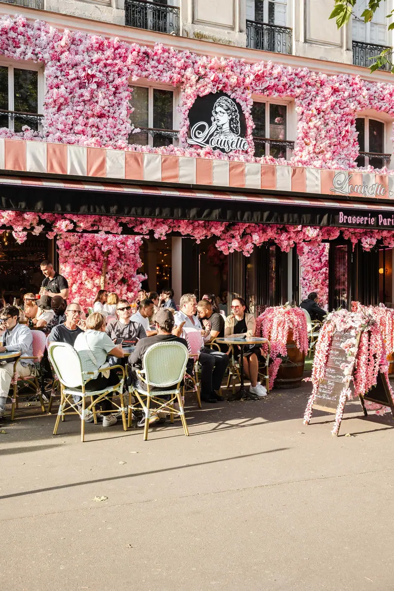
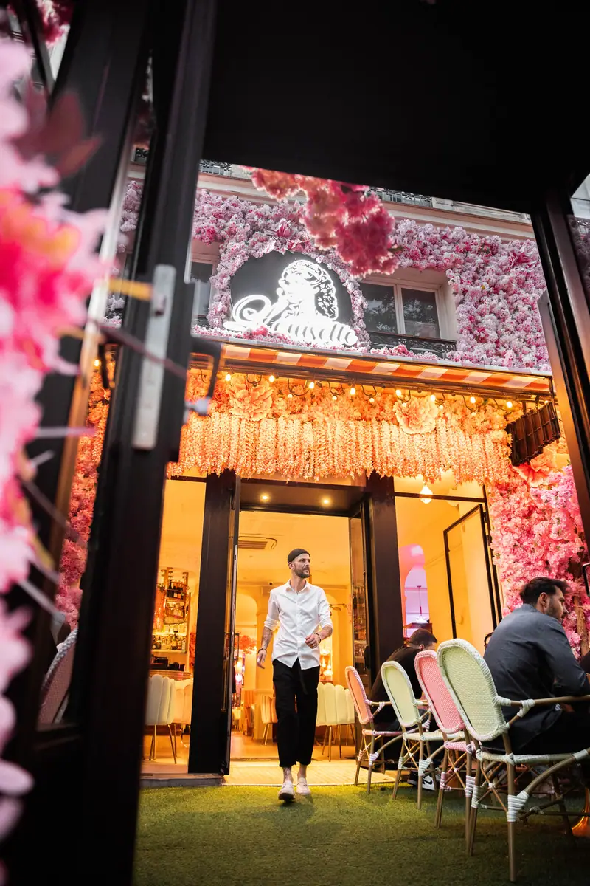
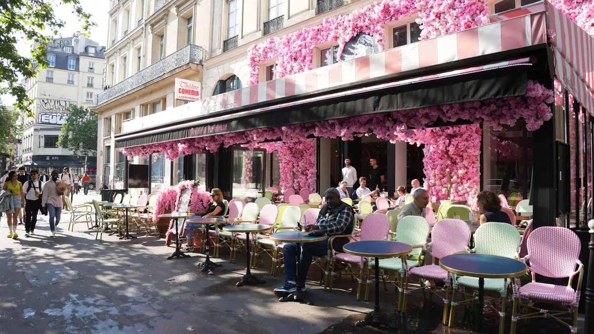
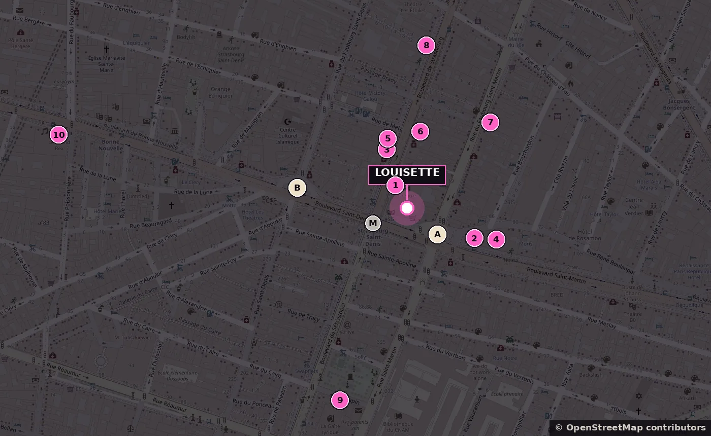

Infos pratiques.
Tout ce qu'il faut savoir avant de venir chez Louisette, en une page. Adresse, horaires, transports, stationnement, téléphones. Rien d'autre.
Nous trouver



Où nous trouver.
La Maison Louisette se trouve au 8 boulevard Saint-Denis, 75010 Paris, sur les Grands Boulevards, au pied de la Porte Saint-Denis. La station de métro la plus proche est Strasbourg-Saint-Denis, desservie par les lignes 4, 8 et 9 : la bouche Porte Saint-Martin débouche à une trentaine de mètres de la terrasse.
| Adresse | 8 boulevard Saint-Denis, 75010 Paris |
|---|---|
| Métro | Strasbourg-Saint-Denis — lignes 4, 8 et 9, sortie Porte Saint-Martin |
| Bus | Lignes 20, 32, 38 et 39 — arrêt à moins de 130 m |
| Horaires | Ouvert tous les jours de 8 h à 2 h (9 h le dimanche), en service continu |
| À emporter | Oui, aux heures de la cuisine : 9 h – 23 h du dimanche au jeudi, 9 h – 1 h le vendredi et le samedi |
| Réserver | 01 40 34 20 57 ou en ligne |
| Groupes et privatisation | 09 74 64 03 84 — voir la page groupes |
| Courriel | contact@louisette-paris.com |
| Paiement | Cartes bancaires, espèces et titres-restaurant |
Au milieu des théâtres.
Le 8 boulevard Saint-Denis est sur les Grands Boulevards, à la jonction du 2e, du 3e et du 10e. Vingt-quatre salles, cinémas et music-halls sont à un quart d'heure de marche, et sept d'entre eux à trois minutes ou moins. Le Grand Rex est à 590 mètres — sept minutes de marche par le boulevard. Vingt et un monuments et lieux de visite ont eux aussi été mesurés : ils sont sur la page le quartier.

- 1Théâtre Libre — 80 m
- 2Théâtre de la Renaissance — 132 m
- 3La Scala Paris — 151 m
- 4Théâtre de la Porte Saint-Martin — 165 m
- 5L'Archipel — 167 m
- 6Théâtre Antoine — 172 m
- 7Le Splendid — 247 m
- 8Le Brady — 325 m
- 9La Gaîté Lyrique — 359 m
- 10Le Grand Rex — 590 m
- APorte Saint-Martin — 61 m
- BPorte Saint-Denis — 178 m
- MMétro Strasbourg-Saint-Denis — 56 m
Ouvrir l'itinéraire · Les vingt-sept salles et leurs distances · Les monuments du quartier
Venir en métro, en bus, à vélo.
| Métro | Strasbourg-Saint-Denis, lignes 4, 8 et 9. La bouche Porte Saint-Martin est à une trentaine de mètres. Attention : les accès boulevard de Strasbourg et passage du Prado sont des sorties seules. |
|---|---|
| Dernier métro | Ligne 4 : dernier passage vers 1 h 05 du dimanche au jeudi, vers 2 h 05 les vendredis et samedis. Lignes 8 et 9 : une dizaine de minutes plus tôt. Le réseau ferme à 1 h 15, et à 2 h 15 les nuits de fin de semaine. |
| Bus de jour | Lignes 20, 32, 38 et 39. Le plus proche est l'arrêt Porte Saint-Denis, ligne 32, à 55 m. Ces quatre lignes sont accessibles en fauteuil roulant. |
| Bus de nuit | Noctilien N13 et N14, arrêts Strasbourg-Saint-Denis et Porte Saint-Martin, à 130 m et 106 m. Le réseau Noctilien circule de 0 h 30 à 5 h 30. |
| Vélib' | Station Strasbourg-Saint-Denis (n° 10166, 16 bornettes) à 67 m. Station Porte Saint-Martin (n° 3101, 34 bornettes) à 138 m : plus grande, plus sûre un vendredi soir. |
| Taxis | Station Strasbourg Saint-Denis, à 62 m. |
| Gares | Gare de l'Est à deux stations de la ligne 4, Gare du Nord à trois, Châtelet-Les Halles à trois. Saint-Lazare est à cinq stations de la ligne 9. |
En fauteuil roulant
La salle est de plain-pied et les toilettes sont accessibles, mais la station Strasbourg-Saint-Denis ne l'est pas : aucune des lignes 4, 8 et 9 n'est équipée, comme la quasi-totalité du métro parisien historique. La station de métro accessible la plus proche est Châtelet, sur la ligne 14, à environ 1,3 km. Le trajet praticable depuis le pied de la maison, ce sont les bus 20, 32, 38 et 39, tous accessibles, dont l'arrêt est à moins de 130 m. La nuit, les Noctilien N13 et N14 ne le sont pas encore : prévoyez un taxi ou un VTC.
Venir de loin.
| Gare de l'Est | Deux stations de la ligne 4, ou douze minutes à pied. |
|---|---|
| Gare du Nord | Trois stations de la ligne 4, sans changement. |
| Châtelet-Les Halles | Trois stations de la ligne 4. |
| Saint-Lazare | Cinq stations de la ligne 9, jusqu'à Havre-Caumartin. |
| Aéroport d'Orly | Ligne 14 directe jusqu'à Châtelet, puis ligne 4 : environ 40 à 45 minutes. Dernier départ d'Orly vers 0 h 34 en semaine et 1 h 34 les vendredis et samedis. |
| Aéroport Roissy-Charles-de-Gaulle | RER B jusqu'à la gare du Nord, puis ligne 4 : environ 50 à 55 minutes. Attention : le RER B est interrompu chaque soir pour travaux et remplacé par un bus ; après 22 h 45, comptez plutôt une heure cinquante. |
Les horaires de transport changent : ceux-ci ont été relevés le 10 septembre 2026 dans les données officielles d'Île-de-France Mobilités. Vérifiez le jour de votre venue.
Se garer.
Nous n'avons pas de parking privé. Deux solutions, et l'heure du service change la réponse.
Dans la rue, après 20 h, c'est gratuit
À Paris, le stationnement de surface est payant du lundi au samedi de 9 h à 20 h, hors dimanches et jours fériés — y compris au mois d'août. Autrement dit : à partir de 20 h, toute la nuit, le dimanche et les jours fériés, se garer dans la rue ne coûte rien. C'est exactement la plage du service du soir. En journée, la durée est limitée à six heures consécutives sur le même emplacement.
La rue Meslay, à trois minutes par la rue Saint-Martin, est le seul vrai gisement de places du quartier — environ soixante-quinze emplacements. Elle est en régime mixte, partagée avec les résidents : la rotation y est faible en journée, bien meilleure le soir. La rue René-Boulanger, elle, n'a plus une seule place de voiture : tout y est passé au stationnement vélo.
En ouvrage, à toute heure
Quatre parkings publics couverts autour de la maison. Les tarifs ci-dessous sont ceux affichés par les exploitants le 10 septembre 2026 ; seule la grille affichée à l'entrée du parking fait foi.
254 rue Saint-Martin. Ouvert 24 h/24, 537 places, hauteur 1,90 m. Environ 5,40 € l'heure. Quatre places réservées aux personnes à mobilité réduite. Le plus proche.
5-7 rue du Faubourg-Poissonnière, sous le Grand Rex. 306 places, hauteur 1,90 m. L'exploitant ne publie pas de grille horaire.
40 rue Dussoubs. Ouvert 24 h/24, hauteur 1,90 m. Environ 5,80 € l'heure.
8 ter square Alban-Satragne. Ouvert 24 h/24, 685 places. Environ 5,00 € l'heure. Seize places réservées aux personnes à mobilité réduite : c'est le mieux équipé, mais onze minutes de marche.
Une seule place de voirie réservée aux personnes à mobilité réduite se trouve à proximité immédiate, au 31 rue du Faubourg-Saint-Martin, à 130 m. Il n'existe aucun emplacement « dépose-minute » dans le quartier : pour déposer quelqu'un devant la porte, le plus simple reste l'arrêt minute d'un taxi sur le boulevard.
Le quartier autour.
Deux arcs de triomphe classés en 1862, onze monuments protégés à dix minutes ou moins, les passages couverts, les musées et les deux grandes gares : le détail, avec les distances mesurées et le statut patrimonial de chacun, est sur la page le quartier. Les salles de spectacle ont la leur : les vingt-sept salles.
Avant de venir.
Les questions qu'on se pose sur le trottoir, et leurs réponses.
| Accès | De plain-pied, sans marche à l'entrée. Toilettes accessibles aux personnes à mobilité réduite. En revanche la station de métro ne l'est pas : venez en bus 20, 32, 38 ou 39, tous accessibles, arrêt à moins de 130 m. |
|---|---|
| Enfants | Bienvenus à toute heure du service continu. Nous n'avons pas de chaise haute. |
| Régimes | Options végétariennes et sans gluten à la carte. Signalez une allergie ou une intolérance à la commande. |
| Chiens | Acceptés en terrasse, tenus en laisse. Pas en salle. |
| Wi-Fi | Gratuit en salle. Prises électriques disponibles aux tables. |
| Terrasse | Couverte, mais non chauffée : elle ferme quand le froid s'installe. |
| Tenue | Libre en journée, correcte le soir. |
| Voiture | Pas de parking privé. Le stationnement de surface est gratuit après 20 h, le dimanche et les jours fériés. Le parking couvert le plus proche est Indigo Saint-Martin, 254 rue Saint-Martin, à six minutes à pied. |
Les horaires, jour par jour.
Louisette est ouverte sept jours sur sept, de 8 h à 2 h du matin (9 h le dimanche). Le service ne s'arrête pas entre le déjeuner et le dîner : la cuisine tourne en continu, du premier café au dernier cocktail.
| Lundi | 8 h – 2 h |
|---|---|
| Mardi | 8 h – 2 h |
| Mercredi | 8 h – 2 h |
| Jeudi | 8 h – 2 h |
| Vendredi | 8 h – 2 h |
| Samedi | 8 h – 2 h |
| Dimanche | 9 h – 2 h |
Réserver, ou passer.
Pour une table de deux à six personnes, la réservation en ligne est le plus rapide. Au-delà, ou pour une privatisation, appelez la ligne groupes au 09 74 64 03 84 ou passez par la page groupes.
Une allergie ou une intolérance ? Signalez-la à votre arrivée : l'information sur les quatorze allergènes à déclaration obligatoire est tenue à votre disposition en salle.
Votre table vous attend.
Ouvert tous les jours de 8 h à 2 h (9 h le dimanche), 8 boulevard Saint-Denis.
Les dates qui valent le déplacement.
Vingt-sept salles de spectacle sont à un quart d'heure de la maison, et le comptoir a ses soirées. Une fois par mois, nous envoyons les dates à retenir : les DJ, les soirées, ce qui change à la carte. Rien d'autre.
Vous vous désinscrivez en un clic. Votre adresse ne part chez personne, et ne sert qu'à ça.
M’inscrire — ouvre votre messagerie
Le message est déjà rédigé : il ne reste qu’à l’envoyer, et il vaut preuve de votre accord. Si votre téléphone n’ouvre rien, écrivez-nous à contact@louisette-paris.com. Voir la politique de confidentialité.